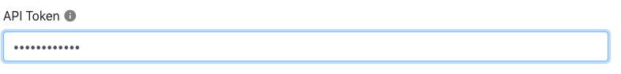
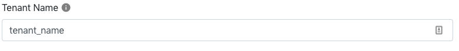
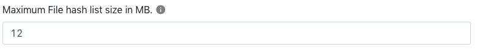
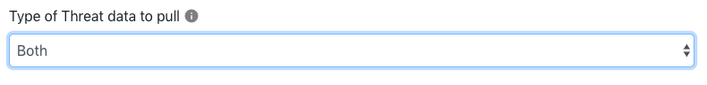
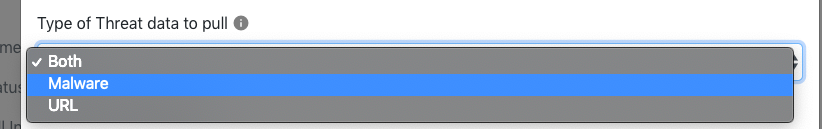
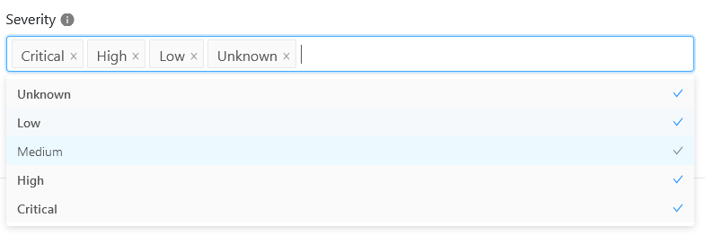

Netskope Threat Exchange Developers Guide
This document explains how to write a new Threat Exchange plugin and extract maximum value out of your threat ecosystem by leveraging the functionality provided within the Threat Exchange module. You should be able to write a new plugin independently without any technical issues by following this guide. To create a new developers guide, use this template.
Prerequisites
To create a new plugin, you need:
Python 3.x programming experience (intermediate level).
Access to the Netskope Cloud Exchange platform.
API or Python SDK access to the product or solution for which you need to write the plugin.
The Cloud Exchange (CE) platform, and its Threat Exchange module, comes with a rich set of features and functionality that allow for a high degree of customization, so we recommend that you familiarize yourself with the different aspects of the platform as listed below.
Core: CE core engine manages the 3rd-party plugins and their life cycle methods, plus has API endpoints for interacting with the platform to perform various tasks.
Module: The functional code areas that invoke modular-specific plugins to accomplish different workflows. Threat Exchange is one of the modules in Cloud Exchange.
Plugin: Plugins are Python packages that have logic to pull and push Threat IoC information to/from 3rd-party Threat Intel systems, which will then be stored in the Threat Exchange.
Plugin Configurations: Plugin configurations are the plugin class objects which are configured with the required parameters and are scheduled by the Threat Exchange core engine for pulling and pushing Threat IoC information.
Indicators (Threat IoCs): Indicators are malware hashes and malsite URLs objects gathered from various Threat Intel Platform and stored in the Threat Exchange database.
Use the Package Directory Structure for all Python code.
Make sure all the 3rd-party libraries packaged with the plugin package are checked for known vulnerabilities.
Make sure to follow standard Python code conventions.
Run and verify that the flake8 lint check passes with docstring check enabled.
For Scripts/Integrations written in Python, make sure to create unit tests as documented here.
Plugin architecture allows storing states; however, avoid storing huge objects for state management.
Check your python code for any vulnerabilities.
The plugin icon has to be under 10kb. Make sure to use the company logo(and not the product’s) with a transparent background . Recommended size for logo is 300 x 50 or similar aspect ratio.
Use the checkpoint provided by the Threat Exchange core rather than implementing one on your own.
Follow the Plugin Directory Structure.
Make sure to map the various fields received from API calls with the Indicator data model to leverage the full benefit of the system. Fields like reputation, first-seen, and comments so that the data in the indicator fields makes more sense to the SOC user when analyzing the data. Make sure to map the comment field which gives more context to the SOC analyst. The comment field could include file name (in case of Hash).
Convert the time-stamp values to the human-readable format (from epoch to DateTime object).
Use proper validation for the parameters passed to the validate method and provide the proper help text for all the parameters.
Use notifier object to raise the notification for failures or critical situations (like rate-limiting, exceeding payload size) to notify the status of the plugin to the user.
Make sure to implement a proper logging mechanism with the logger object passed by the Threat Exchange platform. Make sure enough logging is done which helps the Ops team in troubleshooting. Make sure any sensitive data is not logged or leaked in the notification.
Have a meaningful name and proper type of plugin configuration parameters. Proxy configuration dict and SSL certificate validation flag is passed by the Threat Exchange platform.
This section explains the process of writing a plugin from scratch, and starts with a quick overview section to show the overall approach, and then a section on the detailed requirements.
Download the sample plugin from the NetskopeOSS public Github repository.
Plugin Development Process Overview
This section is intended to illustrate, at a high level, what is involved in building a plugin that extracts data to Cloud Exchange using ThreatConnect for the example 3rd party system.
Set Up Environment
Setup your preferred IDE and verify it is using Python3.
> python3 --version
Python 3.9.10
Build the manifest.json File
The manifest file controls what is seen on the plugin configuration parameters setup page in Cloud Exchange.
Some plugins will have more fields than others. You should be able to find which fields are required from the vendor’s API documentation. The TreatConnect plugin only required fields: URL, Client ID, and Client Secret.
{
"name": "ThreatConnect",
"id": "tc_netskope",
"version": "1.0.0",
"description": "ThreatConnect Plugin for Netskope",
"patch_supported": false,
"configuration": [
{
"label": "ThreatConnect URL",
"key": "tc_host",
"type": "text",
"default": "",
"mandatory": true,
"description": "This is the URL to the ThreatConnect instance."
},
{
"label": "ThreatConnect Client ID",
"key": "tc_client_id",
"type": "text",
"default": "",
"mandatory": true,
"description": "This is the ThreatConnect Oauth2 Client ID"
},
{
"label": "ThreatConnect Client Secret",
"key": "tc_client_secret",
"type": "password",
"default": "",
"mandatory": true,
"description": "This is the ThreatConnect Oauth2 Client Secret"
}
]
}
Set Up Partner Software
You will need to get credentials for a test/dev account on the integrated tenant. If you need help getting credentials, we may be able to help. Email tech-alliances@netskope.com
A kick-off meeting with the integration partner is also helpful. They should be able to guide you to the section of the API documentation that you need to be working with.
Once logged in, review the site’s API documentation. From the API documentation, you will need information about Authentication, API Get, and API POST/PUT.
Getting Started - Integrations
Searching for the API in their interface reveals:
Quick Start — ThreatConnect Developer Docs latest documentation
Now that you reviewed the API, create an API user/token for testing the API calls and data formats for information in the response(s).
Example token:
Robert Bob Access ID XXXXXX Secret Key XXXXXXX
To make a test call, the following is needed:
Calling URL: https://api.threatconnect.com
API URL Call: https://partnerstage.threatconnect.com/api/v3/indicators/
Access key
Secret key
API calls to Threatconnect also require a time stamp.
Sample call:
import requests
url = "https://partnerstage.threatconnect.com/api/v3/indicators/"
payload={}
headers = {
'Authorization': 'XXXX=',
'Timestamp': '1646182233'
}
response = requests.request("GET", url, headers=headers, data=payload)
print(response.text)Run test get and view output (print)
{"next":"https://partnerstage.threatconnect.com/api/v3/indicators?resultStart=100&resultLimit=100","data":[
{"id":46305871,"ownerName":"Netskope","dateAdded":"2022-01-13T23:06:52Z","webLink":"https://partnerstage.threatconnect.com/auth/indicators/details/url.xhtml?orgid=46305871%22,%22type%22:%22URL%22,%22lastModified%22:%222022-02-07T23:19:07Z%22,%22rating%22:5.00,%22confidence%22:100,%22summary%22:%22http://gary.jenkins.com/bad.php%22,%22privateFlag%22:false,%22active%22:true,%22activeLocked%22:false,%22text%22:%22http://gary.jenkins.com/bad.php "},
{"id":1530801,"ownerName":"Technical Blogs and Reports","dateAdded":"2020-11-08T16:50:05Z","webLink":"https://partnerstage.threatconnect.com/auth/indicators/details/address.xhtml?address=23.91.10.24%22,%22type%22:%22Address%22,%22lastModified%22:%222022-02-07T23:18:55Z%22,%22summary%22:%2223.91.10.24%22,%22privateFlag%22:false,%22active%22:true,%22activeLocked%22:false,%22ip%22:%2223.91.10.24 "},
{"id":35155423,"ownerName":"Technical Blogs and Reports","dateAdded":"2021-10-02T14:59:20Z","webLink":"https://partnerstage.threatconnect.com/auth/indicators/details/address.xhtml?address=199.59.243.200","type":"Address","lastModified":"2022-02-07T23:18:47Z","summary":"199.59.243.200","privateFlag":false,"active":true,"activeLocked":false,"ip":"199.59.243.200 "},
],"status":"Success"}
Slice the Data Payload
Now that you have the raw output of the API call, we will need to extract the needed data from it.
Detailed Plugin Build Guide
Download the sample plugin from the NetskopeOSS public Github repository, or use an existing plugin as a template that you have downloaded from Github.
Development Setup
Threat Exchange utilizes Python3 (v3.7 and above). Make sure to set up python3 in your development environment. Pytest is used to run unit tests.
Following Python libraries are included within the Netskope Threat Exchange platform.
Library Name | Version |
|---|---|
aiofiles | 0.4.0 |
amqp | 2.5.2 |
attrs | 19.3.0 |
bcrypt | 3.1.7 |
billiard | 3.6.1.0 |
celery | 4.3.0 |
celerybeat-mongo | 0.1.0 |
certifi | 2019.11.28 |
cffi | 1.13.2 |
chardet | 3.0.4 |
fastapi | 0.44.0 |
idna | 2.8 |
importlib-metadata | 1.1.0 |
jsonschema | 3.2.0 |
kombu | 4.6.6 |
mongoengine | 0.18.2 |
more-itertools | 8.0.0 |
passlib | 1.7.2 |
pycparser | 2.19 |
pydantic | 1.2 |
PyJWT | 1.7.1 |
pymongo | 3.9.0 |
pyrsistent | 0.15.6 |
python-multipart | 0.0.5 |
pytz | 2019.3 |
requests | 2.22.0 |
six | 1.13.0 |
starlette | 0.12.9 |
urllib3 | 1.25.7 |
vine | 1.3.0 |
zipp | 0.6.0 |
requests-mock | 1.7.0 |
Netskope advises bundling any of the third party python libraries your plugin will need with the plugin package itself. To achieve this bundling use the pip installer; it provides a switch which takes a directory as an input. If it is provided, pip will install the packages into that directory.
For example, the command shown below will install the cowsay package into the directory packages.
> pip install cowsay --target ./packages
For the official documentation on this, refer https://pip.pypa.io/en/stable/reference/pip_install/#cmdoption-t.
Recommended IDEs are PyCharm or Visual Studio Code.
Plugin Directory Structure
This section describes the typical directory structure for the Threat Exchange plugin.
/sample_plugin/ ├── __init__.py ├── icon.png ├── main.py └── manifest.json
README.md: README file contains the documentation for the Plugin integration use-case.
__init__.py: Every plugin package is considered a python module by the Threat Exchange code. Make sure every plugin package contains the empty “__init__.py” file.
icon.png: Plugin icon logo, this will be visible in the plugin chiclet and configuration cards on the UI. The logo should have a transparent background with recommended size of 300*50 pixels or a similar aspect ratio.
main.py: This python file contains the Plugin class containing the concrete implementation for the pull, push and validate method.
manifest.json: Manifest file for the plugin package containing information about all the configurable parameters and their data types. This file has more information about the plugin integration as well.
The listed files here are mandatory for any plugin integration, but you can add other files based on specific integration requirements.
Note: Make sure the plugin directory name (e.g sample_plugin) matches with the manifest.json’s id field.
Manifest.json
This is a JSON file that stores the meta-information related to the plugin, which is then read by the Threat Exchange module to render the plugin in the UI as well as enabling the Threat Exchange module to know more about the plugin, including required configuration parameters, the plugin-id, the plugin-name, etc.
Every plugin must contain this file with the required information so that Threat Exchange can instantiate the Plugin object properly.
Common parameters for manifest.json include:
name: (string) Name of the plugin. (Required)
id: (string) Id of the plugin package. Make sure it is unique across all the plugin installed in the Cloud Exchange. The ID has to match the directory name of the plugin package. (Required)
version: (string) Version of the plugin. Usage of a MAJOR.MINOR.PATCH (ex. 1.0.1) versioning scheme is encouraged although there are no restrictions. (Required)
description: (string) Description of the plugin. Provide a detailed description which mentions the capabilities and instructions to use the plugin, (ex. This plugin works with product foo and extracts both md5 and sha256 hashes as well as malURL to Threat Exchange and pushes the same to product foo.) This description would appear on the Plugin Configuration card. (Required)
push_supported: (boolean) This flag indicates whether the plugin supports the push method or not. If it is set to false then sharing related fields will not be displayed in the UI. (optional, defaults to true)
patch_supported: (boolean) This flag indicates whether the integrated product supports incrementally reporting indicators. Certain products (e.g. Netskope features using RESTAPIv1) expect that all the indicators have to be reported each time. In such cases “patch_supported” is required to be set as ‘False’. Alternatively, ServiceNow allows sharing indicators one at a time and retains the previously shared indicators. In its a case, patch_supported was required to be set as ‘True’. (Required)
configuration: (array) Array of JSON objects that contains information about all the parameters required by the plugin - their name, type, id, etc. The common parameters for the nested JSON objects are explained below.
label: Name of the parameter. This will be displayed on the plugin configuration page. (Required)
key: Unique parameter key, which will be used as a key in the python dict object where the plugin configuration is used. (Required)
type: Value type of the parameter. Allowed values are 'text', 'password', 'number' and 'choice'. (Required) Refer to Plugin Configuration parameter types below for more details.
default: The default value for this parameter. This value will appear in the plugin configuration page on Threat Exchange UI. Supported data-types are "text", "number", and “list” (for multichoice type). (Required)
mandatory: Boolean which indicates whether this parameter is mandatory or not. If a parameter is mandatory Threat Exchange UI won't let you pass an empty value for the parameter. Allowed values are `true` and `false`. (Required)
description: Help text level description for the parameter which can give more details about the parameter and expected value. This string will appear in the plugin configuration page as a help-text. (Required)
choices: A list of JSON objects containing key and value as JSON keys. This parameter is only supported by 'type': 'choice`.
Plugin Configuration Parameter types
Make sure all the required plugin configuration parameters are listed under the configuration section of manifest.json for the plugin.
Use this parameter for storing any secrets/passwords for authentication with API endpoints. Parameters with type as the password will have a password text box in the Plugin configuration page and will be obfuscated and encrypted by the platform.
Sample JSON
"configuration": [
{
"label": "Api token",
"key": "api_token",
"type": "password"
},
]Plugin configuration view:
|  |
Use this parameter for storing any string information such as base-url, username, etc. This parameter will have a normal text input on the plugin configuration page.
Sample JSON
"configuration": [
{
"label": "User Name",
"key": "user_name",
"type": "text"
},
]Plugin configuration view:
|  |
Use this parameter for storing number/float values. This parameter will have a number input field on the plugin configuration page.
Sample JSON
"configuration": [
{
"label": "Maximum IOC count",
"key": "max_ioc_count",
"type": "number"
},
]
Plugin configuration view:
|  |
Use this parameter for storing any enumeration parameter values. This parameter will have a dropdown on the plugin configuration page.
Sample JSON
"configuration": [
{
"label": "Select Type of IOC to pull",
"key": "ioc_type",
"type": "choice",
"choices": [
{
"key": "Malware",
"value": "malware"
},
{
"key": "Malsite",
"value": "malsite"
}
]
},
]Plugin configuration view:
|  |
After selecting the input.
|  |
Use this parameter for storing multiple choice values. This parameter will have a dropdown on the plugin configuration page with ability to select multiple values.
Sample JSON
"configuration": [
{
"label": "Severity",
"key": "severity",
"type": "multichoice",
"choices": [
{
"key": "Unknown",
"value": "unknown"
},
{
"key": "Low",
"value": "low"
},
{
"key": "Medium",
"value": "medium"
},
{
"key": "High",
"value": "high"
},
{
"key": "Critical",
"value": "critical"
}
],
"default": [
"critical",
"high",
"medium",
"low",
"unknown"
],
"mandatory": false,
"description": "Only indicators with matching severity will be saved."
}
]Plugin Configuration View:
|  |
main.py
This python file contains the core implementation of the plugin.
from netskope.integrations.cte.plugin_base import PluginBase, ValidationResult, PushResult from netskope.integrations.cte.models import Indicator, IndicatorType from netskope.integrations.cte.models.business_rule import Action, ActionWithoutParams
PluginBase provides access to variables which can be used during the plugin lifecycle
Methods. Below is the list of variables.
Variable Name | Usage | Description |
|---|---|---|
self.logger | self.logger.error(“Message”) self.logger.warn(“Message”) self.logger.info(“Message”) | Logger handle provided by core. Use this object to log important events. The logs would be visible in Threat Exchange Audit logs. Refer the Logging documentation. |
self.configuration | self.configuration.get(<attribute-key-name>) | JSON representation of the configuration object of Plugin instance. Use this to access the configuration attributes like authentication credentials, server details, etc. Use the key name of the attribute mentioned in manifest.json. |
self.last_run_at | If self.last_run_at: self.last_run_at.timestamp() Use this format to convert the last run time in epoch format. | Provides the timestamp of last successful run time of the Plugin’s pull method. Threat Exchange core maintains the checkpoint time after each successful pull() execution. For the first execution, the value would be None. The datatype of the object is datetime. |
self.storage | Threat Exchange provides the plugin a mechanism to maintain state. Use this object to persist any state that would be required during subsequent calls. The datatype of this object is python dict. | |
self.notifier | self.notifier.info(“message”) self.notifier.warn(“message”) self.notifier.error(“message”) | This object provides handle of Threat Exchange core’s notifier. Use this object to push any notification to the platform. The notifications would be visible on Threat Exchange UI. Make sure the message contains summarized information for user to read and take necessary actions. For example, a used notifier in Netskope plugin if the push() method exceeds 8MB limit of the product. |
self.proxy | requests.get(url=url, proxies=self.proxy) | Handle of system’s proxy settings if configured, else {}. |
self.ssl_validation | requests.get(url=url, verify=self.ssl_validation) | Boolean value which mentions if ssl validation be enforced for REST API calls. |
Plugin Class
Plugin class has to be inherited from the PluginBase class. PluginBase class is defined in netskope.integrations.cte.plugin_base.
Make sure Plugin class provides implementation for the pull, push and validate method.
Plugin class will contain all the necessary params to establish connection and authentication with the 3rd-party API.
"""Sample plugin implementation. This is a sample implementation of base PluginBase class. Which explains the concrete implemetation of the base class. """ from netskope.integrations.cte.plugin_base import PluginBase, ValidationResult, PushResult from netskope.integrations.cte.models import Indicator, IndicatorType from typing import List from datetime import datetime import requests class SamplePlugin(PluginBase): """SamplePlugin class having concrete implementation for pulling and pushing threat information. This class is responsible for implementing pull, push and validate methods with proper return types, so that it's lifecycle execution can be scheduled by the CTE core engine. """
This is an abstract method of PluginBase Class.
This method implements the logic to pull the Threat IOCs (Malware & Malsites) from the API endpoints. This method is invoked periodically.
Make sure its unit-testable.
Use the checkpoint passed by Threat Exchange platform by invoking self.last_run_at It returns the datetime.datetime Python object containing timestamp when this method was last executed successfully.
Use the proxy configuration passed by the Threat Exchange platform by invoking self.proxy. It returns the python dict object which can be used directly with requests module.
All the configuration parameters for API authentication are passed as python dict receives them by invoking self.configuration.
All the logs be logged by the self.logger object with proper log level (info, warn, error). This object logs the logs to MongoDB and can be accessed via API calls.
Use self.ssl_validation bool to enable/disable validation of the SSL server certificate.
Return the list of Indicator objects (Refer to Indicator Data Model) which contain the data received from the API endpoint.
In the case of failure raise an error or exception of appropriate type with proper message.
def pull(self):
"""Pull the Threat information from the 3rd part Threat Intel systems.
Implement the logic of pulling Threat data from 3rd party apis and return the list of objects netskope.integrations.cte.models.Indicators on successful pull otherwise raises an exception.
Returns:
List[netskope.integrations.cte.models.Indicators]: List of indicator objects received from the 3rd party Threat Intel Systems.
"""
# Load all the configured plugin parameters as python dict object.
# Use the key name provided in the manifest.json file for the configuration parameters to
# get the value of that particular parameter.
config = self.configuration
# get proxy settings dict, just the way requests module requires.
proxy_dict = self.proxy
# get the ssl_validation bool for enabling/disabling validation of SSL server certificates.
ssl_validation = self.ssl_validation
start_time = self.last_run_at # datetime.datetime object.
# How to use proxy dict and ssl_validation flag.
resp = requests.get("www.example.com", proxies=proxy_dict, verify=ssl_validation) # noqa: F841
# Get the logger object for logging purpose. This logger object logs all the logs to mongodb
# under the cte database logs collection. Log timestamp is automatically recorded by the logger library.
# Supported logging levels are info, warn and error.
logger = self.logger
logger.info("Sample Plugin: Starting Pulling data for sample plugin.")
indicator_list = self.pull_data_from_3rd_party_api(config, logger)
logger.info("Sample Plugin: Finished pulling data")
return indicator_list
This is an abstract method of PluginBase Class.
This method implements the logic to push the Threat IOC information shared by the Threat Exchange platform to the product API endpoints.
It receives all the parameters that the Pull method receives in addition to that it receives the List of Indicator objects from the Threat Exchange platform as method argument which are to be shared with the integrating product.
This method will be invoked when the Threat Exchange platform receives a new indicator from a source and sharing of indicators is configured with the current plugin configuration.
If the API supports the PATCH method to share the indicators then this method will receive only one indicator object in the list otherwise it will receive all the indicator objects which are returned after applying the sharing filters on all the indicators in the Threat Exchange platform database.
Make sure to handle the case when the maximum payload size supported by API endpoint is exceeded. There can be multiple ways to handle this case.
If the API endpoint supports multiple requests with a fixed payload size, send the data in chunks.
If the API endpoint does not support multiple requests (i.e. we can push it in one API call only) either plugin can skip the remaining indicators and raise a notification to the user to adjust the sharing filters or it can fail with the error of exceeded payload size.
Return the PushResult object (Refer to PushResult Class with a success flag indicating whether the Push operation was successful or not.
Handle all the Exceptions with connection and HTTP response code.
def push(self, indicators: List[Indicator]):
"""Push the Indicator list to the 3rd party Threat Intel systems.
Implement the logic of spliting the indicators list according to their type and push the data
to the 3rd party APIs. This method will be invoked while sharing the Threat information with 3rd party.
Args:
indicators (List[netskope.integrations.cte.models.Indicators]): List of Indicator objects to be pushed.
Returns:
netskope.integrations.cte.plugin_base.PushResult: PushResult object with success flag and Push result message.
"""
# Load all the configured plugin parameters as python dict object.
# Use the key name provided in the manifest.json file for the configuration parameters to
# get the value of that particular parameter.
config = self.configuration
# get proxy settings dict, just the way requests module requires.
proxy_dict = self.proxy
# get the ssl_validation bool for enabling/disabling validation of SSL server certificates.
ssl_validation = self.ssl_validation
# How to use proxy dict and ssl_validation flag.
resp = requests.get("www.example.com", proxies=proxy_dict, verify=ssl_validation) # noqa: F841
# Get the logger object for logging purpose. This logger object logs all the logs to mongodb
# under the cte database logs collection. Log timestamp is automatically recorded by the logger library.
# Supported logging levels are info, warn and error.
logger = self.logger
logger.info("Sample Plugin: Starting Pushing data for sample plugin.")
push_result = self.push_data_to_3rd_party_api(config, logger, indicators)
logger.info("Sample Plugin: Finished Pushing data for sample plugin.")
return push_result
This is an abstract method of PluginBase Class.
This method validates the plugin configuration and authentication parameters passed while creating a plugin configuration.
This method will be called only when a new configuration is created or updated.
Validate against all the mandatory parameters are passed with the proper datatype.
Validate the authentication parameters and the API endpoint to ensure the smooth execution of the plugin lifecycle.
Return the object of ValidationResult (Refer to ValidationResult Class) with a success flag indicating validation success or failure and the validation message containing validation failure reason.
def validate(self, data):
"""Validate the Plugin configuration parameters.
Validation for all the parameters mentioned in the manifest.json for the existence and
data type. Method returns the netskope.integrations.cte.plugin_base.ValidationResult object with success = True in the case
of successful validation and success = False and a error message in the case of failure.
Args:
data (dict): Dict object having all the Plugin configuration parameters.
Returns:
netskope.integrations.cte.plugin_base.ValidateResult: ValidateResult object with success flag and message.
"""
self.logger.info("Sample Plugin: Executing validate method for Sample plugin")
if (
"secret_field_id1" not in data
or not data["secret_field_id1"]
or type(data["secret_field_id1"]) != str
):
self.logger.error(
"Sample Plugin: Validation error occurred Error: Secret Field1 is required with type string."
)
return ValidationResult(
success=False, message="Invalid Secret Field 1 provided.",
)
else:
return ValidationResult(
success=True, message="Validation Successful for Sample plugin"
)
This is an abstract method of PluginBase Class.
This method should return a list of all the supported actions (displayed as Targets in the UI) if the plugin supports sharing of indicators (i.e. manifest has push_supported=true) otherwise it should return an empty list.
Add all the supported actions in the ActionWithoutParams class and return a list of objects of ActionWithoutParams class.
If the plugin supports sharing of indicators then this method should return at least one action.
If manifest has push_supported=false:
def get_actions(self): """Get available actions. Returns: List[ActionWithoutParams]: List of ActionWithoutParams objects that are supported by the plugin. """ return []
If manifest has push_supported=true:
def get_actions(self): """Get available actions. Returns: List[ActionWithoutParams]: List of ActionWithoutParams objects that are supported by the plugin. """ return [ ActionWithoutParams(label=”Share Indicators”, value=”share”) ActionWithoutParams(label=”Add to Group”, value=”add”) ]
This is an abstract method of PluginBase Class.
This method should return the list of fields to be rendered in the UI when a target is selected from dropdown.
This method should be called after the user selects any of the actions.
If the selected action requires any parameters then return a list of dictionaries (where each dictionary is a configurable input) otherwise return an empty list.
Go to Manifest.json to see how fields are defined.
If manifest has push_supported=false:
def get_action_fields(self, action: Action): """Get fields required for an action. Args: action (Action): Action object which is selected as Target. Return: List[Dict]: List of configurable fields based on selected action. """ return []
If manifest has push_supported=true:
def get_action_fields(self, action: Action):
"""Get fields required for an action.
Args:
action (Action): Action object which is selected as Target.
Return:
List[Dict]: List of configurable fields based on selected action.
"""
if action.value == “add”:
return [
{
“label”: “Group Name”,
“key”: “group_name”,
“type”: “text”,
“default”: “”,
“mandatory”: True,
“description”: “Name of group.”
}
]
else:
return []
This is an abstract method of PluginBase Class.
This method validates the action and their parameters.
This method will be called only when the new sharing configuration is created or existing sharing configuration is updated.
Validate against all the mandatory parameters are passed with the proper datatype.
Return the object of ValidationResult (Refer to ValidationResult Class) with a success flag indicating validation success or failure and the validation message containing validation failure reason.
If the plugin is not push supported then return ValidationResult object with a success flag otherwise check for validations.
If manifest has push_supported=false:
def validate_action(self, action: Action): """Validate Action Parameters. Args: action (Action): Action object having all the configurable parameters. Return: netskope.integrations.cte.plugin_base.ValidateResult: ValidateResult object with success flag and message. """ return ValidationResult(success=True, message=”Validation successful.”)
If manifest has push_supported=true:
def validate_action(self, action: Action):
"""Validate Action Parameters.
Args:
action (Action): Action object having all the configurable parameters.
Return:
netskope.integrations.cte.plugin_base.ValidateResult: ValidateResult object with success flag and message.
"""
if action.value not in [“share”, “add”]:
return ValidationResult(
success=False, message=”Unsupported action provided.”
)
if action.value == “add”:
if action.parameters.get(“group_name”) is None:
return ValidationResult(
success=False, message=”Group Name should not be empty.”
)
return ValidationResult(
success=True, message=”Validation successful.”
)
Data Models
This section lists down the Data Models and their properties.
This class provides the Python data model for an Indicator object.
Pull method returns the list of objects of Indicator class with the information received from API calls.
Supported values for type field is IndicatorType.MD5, IndicatorType.SHA256 and IndicatorType.URL. MD5 and SHA256 types are used to represent malware indicators and URL type is used to represent malsite indicators.
The value of the reputation field has to be in the range of 1-10. The default value of the reputation fields is 5, if not supplied. If it is supplied (within that range) Threat Exchange will accept and display it.
Data Model Properties
Name | Type | Description |
|---|---|---|
value | string | Indicator value. It can be MD5/SHA256 hash value in the case of Malware indicators, and domain-name/url in case of Malsite indicators. |
type | Enum (IndicatorType) | It can be IndicatorType.MD5 or IndicatorType.SHA256 in the case of Malware indicators, IndicatorType.URL in case of Malsite indicators. |
test | bool | Indicates whether it's a test indicator or not. Default - False |
reputation | int | Reputation score of indicator. Default - 5 |
expiresAt | datetime.datetime | Time after which Indicator will be marked as inactive by the Threat Exchange. |
firstSeen | datetime.datetime | datetime.datetime object indicating when the indicator was discovered for the first time. Default - Current System time when Indicator object was created. |
lastSeen | datetime.datetime | datetime.datetime object indicating when the indicator was discovered for last time. Default - Current System time when Indicator object was created. |
comments | string | Comment string which gives more information about the indicator. |
severity | Enum (SeverityType) | Severity of the indicator. Possible values are: SeverityType.LOW SeverityType.MEDIUM SeverityType.HIGH SeverityType.CRITICAL SeverityType.UNKNOWN |
extendedInformation | string | A link leading to an external source for extended information regarding the indicator. The value in this field will be rendered as a clickable URL in the UI. URL scheme must be either HTTP or HTTPS. |
from netskope.integrations.cte.models import Indicator, IndicatorType
Indicator(
value="md5hash", # md5 hash value of the indicator.
type=IndicatorType.MD5, # Type of indicator.
test=True, # Indicates whether it's test indicator or not. Defaults to False.
reputation=7, # Reputation score of Indicator. Defaults to 5.
# Time after which Indicator will be marked as inactive.
expiresAt=datetime.datetime(2022, 12, 23, 15, 22, 52, 667126),
# Time when the Indicator was discovered first time. Defaults to current time.
firstSeen=datetime.datetime(2017, 1, 11, 15, 22, 52, 667126),
# Time when the Indicator was discovered last time. Defaults to current time.
lastSeen=datetime.datetime(2019, 12, 23, 15, 22, 52, 667126),
# Comment which gives more information about the indicator.
comments="Indicator explanation",
),This class contains the result of Push operation of indicators to the product API endpoint.
The success flag indicates the push operation result and the message flag should have proper error message in the case of failure. (In a case of success a simple success message with success flag True should be returned)
Data Model Properties
Name | Type | Description |
|---|---|---|
success | bool | success flag indicates the result of push operation, whether it succeeded or failed. |
message | string | Message field denotes the error in case of failure. In case of success it can be a simple success message. |
from netskope.integrations.cte.plugin_base import PushResult
PushResult(
success=True,
message=" Successfully pushed data to 3rd party."
)This class contains the result of the validation process on the plugin configuration parameters passed to the Plugin object while creating a new configuration for the plugin.
Make sure that all the parameters passed to the validate method are validated against the data-type and value.
Validate method returns the object of this class with a success flag indicating the result of validation operation and message field contains the proper error message in the case of validation failure. (In a case of success a simple success message with success flag True has to be returned)
Data Model Properties
Name | Type | Description |
|---|---|---|
success | bool | success flag indicates the result of validation operation, whether it succeeded or failed. |
message | string | Message field denotes the error in case of failure. In case of success it can be a simple success message. |
from netskope.integrations.cte.plugin_base import ValidationResult
ValidationResult(
success=True,
message="Validation Successfull for Sample plugin"
)Threat Exchange provides a handle of logger object for logging.
Avoid print statements in the code.
This object logs to the central Threat Exchange database with the timestamp field. Supported log levels are
info,warnanderror.Make sure any API authentication secret or any sensitive information is not exposed in the log messages.
self.logger.error(
"Sample Plugin: Error log-message goes here."
)
self.logger.warn(
"Sample Plugin: Warning log-message goes here."
)
self.logger.info(
"Sample Plugin: Info log-message goes here."
)Notifications
Threat Exchange provides a handle of the notification object, which can be used to generate notifications on Threat Exchange UI.
This object is passed from Threat Exchange to the plugin object. Every plugin integration can use this object whenever there is a case of failure, which has to be notified to the user immediately. The notification timestamp is managed by Threat Exchange.
This object will raise the notification in the UI with a color-coding for the severity of the failure. Supported notification severities are
info,warn, anderror.Make sure any API authentication secret or any sensitive information is not exposed in the notification messages.
self.notifier.info(
"Sample Plugin: Info notification-message goes here."
)
self.notifier.error(
"Sample Plugin: Error notification-message goes here."
)
self.notifier.warn(
"Sample Plugin: Warning notification-message goes here."
)
Tagging
Threat Exchange provides a utility class to handle tagging related functionalities from the plugin push/pull/validate methods. Below are some of the examples of what it can be used for.
from netskope.integrations.cte.models import TagIn from netskope.integrations.cte.utils import TagUtils utils = TagUtils() utils.create_tag(Tag(name="Tag Name", color="#FF0000"))
utils = TagUtils()
if utils.exists("Tag Name"):
pass # tag already existsutils = TagUtils()
utils.on_indicators({
"source": "Test"
}).remove("Tag Name")This removes the Tag Name tag from all the indicators with source=”Test”. The first and only argument to `on_indicators` is a `dict` object. This has to be a valid mongo query.
utils = TagUtils()
utils.on_indicators({
"source": "Test"
}).add("Tag Name")Plugin Packaging
Threat Exchange expects the developed plugin to be in zip or tar.gz format.
Execute the below command to zip the package:
zip -r sample_plugin.zip sample_plugin
Execute the below command to generate tar.gz package:
tar -zcvf sample_plugin.tar.gz sample_plugin
Testing
As part of the build process, we run a few linters to catch common programming errors, stylistic errors, and possible security issues.
This is a basic linter. It can be run without having all the dependencies available and will catch common errors. We also use this linter to enforce the standard python pep8 formatting style. On rare occasions, you may encounter a need to disable an error/warning returned from this linter. Do this by adding an inline comment of the sort on the line you want to disable the error:
# # noqa: <error-id>
For example:
example = lambda: 'example' # example = lambda: 'example' # noqa: E731
When adding an inline comment always also include the error code you are disabling for. That way if there are other errors on the same line they will be reported.
Refer to: https://flake8.pycqa.org/en/latest/user/violations.html#in-line-ignoring-errors
PEP8 style docstring check is also enabled with the flake8 linter. So make sure every function/module has a proper docstring added.
Unit Testing
Ensure unit testing to test small units of code in an isolated and deterministic fashion. Make sure that unit tests avoid performing communication with external APIs and use mocking. Make sure unit tests ensure the code coverage is more than 70%.
In order to work with unit testing, the integration or automation script needs to be developed following the Plugin Directory Structure. We use PIP to install all the required Python module dependencies required to run the setup. Before running the tests, make sure you install all the required dependencies mentioned in the requirements.txt of the Threat Exchange core repository.
Make sure unit tests are written in a separate Python file named: <your_plugin_name>_test.py. Within the unit test file, each unit test function should be named: test_<your test case>. More information on writing unit tests and their format is available at the PyTest Docs.
We use pytest-mock for mocking. pytest-mock is enabled by default and installed in the base environment mentioned above. To use a mocker object simply pass it as a parameter to your test function. The mocker can then be used to mock both the plugin class object and also external APIs.
Example
def test_netskope_pull_success(mocker):
mocker.patch("cte.plugins.netskope.main.NetskopePlugin.pull")
pull_return_result = [
Indicator(value="ind1", type=IndicatorType.MD5),
Indicator(value="ind2", type=IndicatorType.SHA256),
Indicator(value="ind3", type=IndicatorType.URL),
]
NetskopePlugin.pull.return_value = pull_return_result
ns = NetskopePlugin(None, None, None, logger)
actual_pull = ns.pull()
assert pull_return_result == actual_pullTo mock request module response for API calls (requests_mock Pytest plugin is installed with all the dependencies):
def test_fetch_threat_data_malware(requests_mock):
endpoint_url = "https://example-api.com"
mock_response_json = {
'status': 'success',
'data': [
{
'local_md5': 'ind1',
},
{
'local_md5': 'ind2',
},
{
'local_md5': 'ind3',
},
]
}
requests_mock.get(endpoint_url, json=mock_response_json)
config_dict = {
"api_token": "abc",
"tenant_name": "partners",
"file_list": "test",
"url_list": "sample",
"threat_data_type": "URL",
"is_pull_required": "Yes",
"max_file_hash_cap": 8,
"max_url_list_cap": 8,
}
ns = NetskopePlugin(config_dict, None, None, logger)
actual_ind_list = ns.fetch_threat_data(
endpoint_url,
config_dict['api_token'],
datetime.datetime.now(),
time.time(),
"malware"
)
indicator_list = [
Indicator(value="ind1", type=IndicatorType.MD5),
Indicator(value="ind2", type=IndicatorType.MD5),
Indicator(value="ind3", type=IndicatorType.MD5),
]
assert len(actual_ind_list) == len(indicator_list)
for i in range(len(actual_ind_list)):
assert actual_ind_list[i].value == indicator_list[i].value$ PYTHONPATH=. pytest